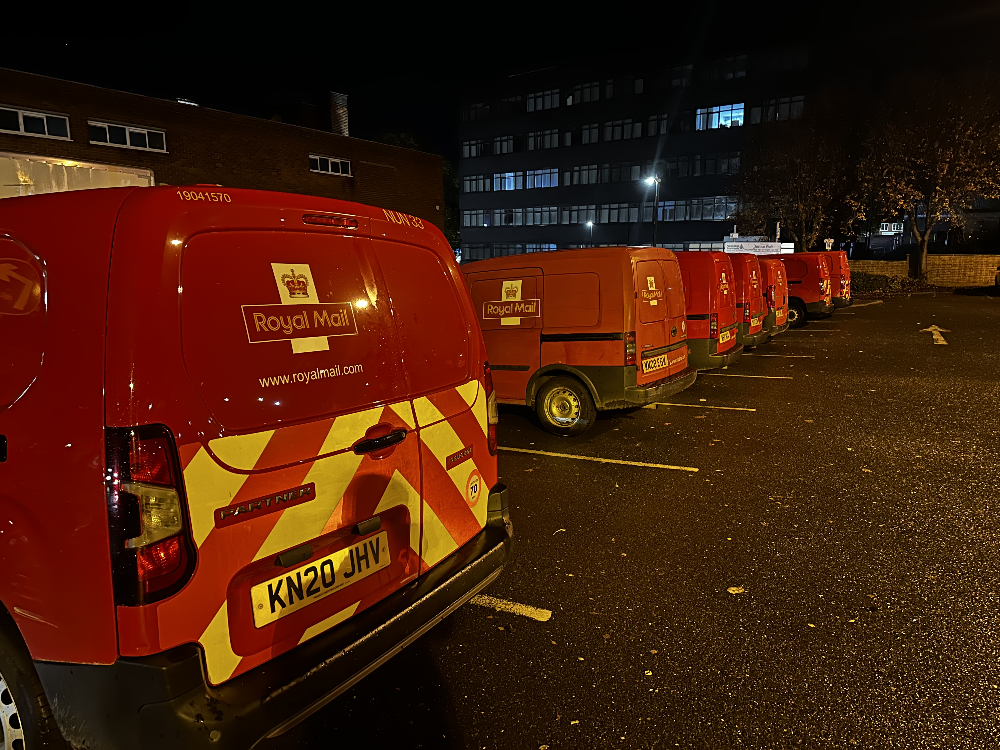

Here I am standing in front of the Buckingham palace. This used to be the place that Queen Elizabeth stayed until she recently passed away. Now this is the place where her son King Charles lives. I don't know very much about this place. Though this is the place where the famous Queens Guard stands. I suppose they are now called the Kings Guard. October 15, 2022
I took this picture after leaving the library late at night while doing uni studies. I took this photo because to me it seemed so uniquely British. Who else in the world calls mail "royal"? I also remember an episode of Top Gear which showed a sports car race, between a Porsche and the royal mail. A very funny episode. October 20, 2022